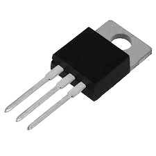

Transistör

Elektronik devrelerde kullanılan transistör
Nedir?
Transistör, elektrik sinyallerini yükselten veya anahtar görevi gören yarı iletken devre elemanıdır.
🔧 İpucu: NPN ve PNP olmak üzere farklı tipleri vardır.
Kullanım Alanları
- Amplifikatör devreleri
- Anahtar devreleri
- Regülatör ve güç devreleri
Teknik Özellikler
- Tipi: NPN / PNP
- Maksimum voltaj ve akım
- Güç tüketimi